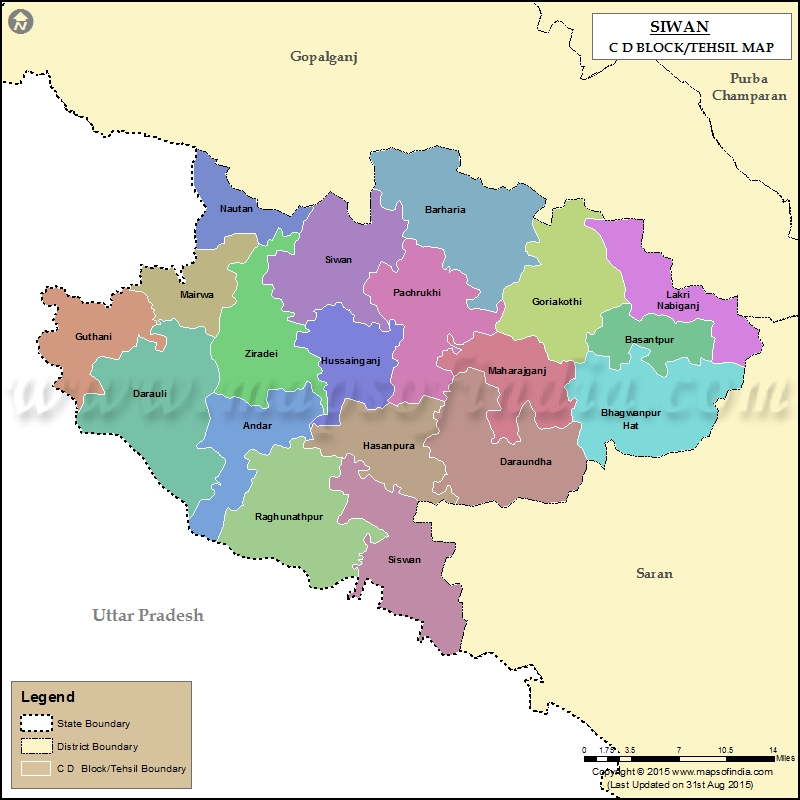
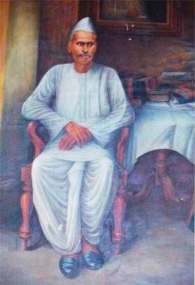
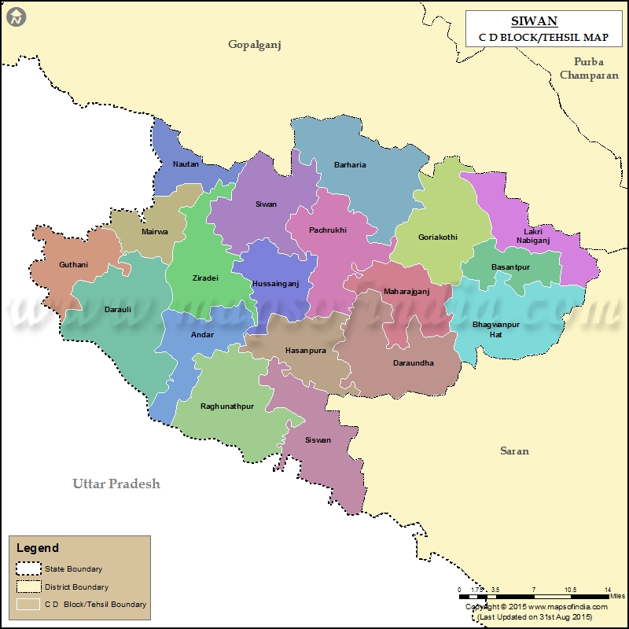
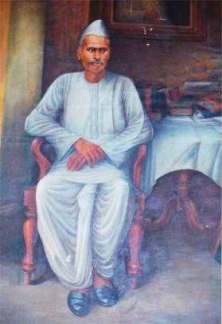

Siwan enjoys a special place in the history of India as being the hometown of Dr. Rajendra Prasad, the first President of India. Historically an old town it is witnessed various social and political events. During 8th century, Siwan was part of Banaras Kingdom. During the 17th century, initially the Dutch ruled siwanand then they were followed by the English . Following the battle of Buxar, the area of Siwan and those surrounding it were made a part of Bengal. Siwan also played a major role during the independence movement.
It is believed that the name of Siwan district comes from the name of a Bandh king whose successors ruled the region for a long time. The king’s name was Shivan Man and hence the name Siwan. It is also believed that even Maharajganj, a part of Siwan district, must have got its name from the Maharaja who ruled here. siwan is also known by the name Aliganj Sawan, after Ali Bux, one of the feudal lords who dominated the region.There is also another story regarding the naming of Siwan. In Bhojpuri language, the word ‘Siwan’ denotes ‘border of a place’. It forms the southern border of Nepal, hence the name. Whatever the real reason, Siwan has much importance in the history of India, not just the modern history but even ancient history.
Siwan also has a lot of mythological importance attached to it. Don, a village located in the Darauli region, has the ruins of a fort, believed to have belonged to the great guru in Mahabharata, who taught Kauravas and Pandavas and who was a leading figure in the Mahabharata war.In fact, his son Ashwadhama is believed to be still wandering the earth because of a curse by Lord Krishna for killing the sons of the Pandavas. Don is also known for a stupa, which is believed to have the vase in which Buddha’s ashes were kept. It is believed that Don was the name of a local Brahmin who helped the dispute among the last followers of Buddha regarding how Buddha’s ashes could be distributed.As a token of gratitude, the vase which contained the ashes was given to Don. He built a stupa to place the vase. The stupa though in ruins is still a revered place for Buddhists. In fact, the famous Chinese traveller, Hiusen Tsang has mentioned about Don in his travelogue. It is also believed that Buddha must have breathed his last somewhere here. The stature of Siwan has acquired more importance recently after the excavation of an idol of Lord Vishnu from the village Bherbania in Siwan district.
During freedom movement, Siwan was one of the foremost centers of freedom struggle. This region was noted for the bravery and fighting spirit of the locals. Siwan is also noted for its social movements, one of which was the anti-purdah movement initiated by the social activist and freedom fighter Braj Kishore Prasad. Dr. Rajendra Prasad, the renowned freedom fighter who went on to become the first President of Independent India belonged to Jiradei, a village in Siwan district.He organised many meetings to spread awareness about freedom struggles in siwan Maulana Mazharul Haque, another great social activist who is even today revered for his promotion of Hindu Muslim Unity, also hails from Siwan. An ashram established by Haque, called Sadaquat Ashram, still stands at the Patna-Danapur road.
During the Non Cooperation Movement and then the Civil Disobedience Movement, called upon by Mahatma Gandhi, Siwan became the epicentre of these movements. In fact, Pandit Jawaharlal Nehru’s tour during the period covered many parts of Bihar, including Siwan. Apart from the activities of brave revolutionaries such as Braj Kishore Prasad and Phulena Prasad, freedom activists like Dr. Rajendra Prasad, Maulana Mazharul Haue, Dr. Sayyad Mohammad, and many more, made Siwan the base of their activities against British. A native of Siwan, Uma Kant Singh, was killed by the British during the Quit India Movement. A peasant movement started by renowned author, Pandit Rahul Sankritayayana at Siwan, went to have huge repercussions on the freedom struggle, thus adding to the historic importance of the place.Mahatma Gandhi during the Champaran Movement stayed at Dr. Rajendra Prasad’s house at Jiradei. The chowki on which Mahatma slept is still preserved at the place as a memory and tribute to the Father of the Nation.
In 1970, major changes were brought about in the jurisdiction of different places and Siwan was one of them. Siwan was declared a district following the new jurisdiction in 1972, and included 13 sub division blocks and 10 blocks of Gopalganj. In 1973, Gopalganj was removed from Siwan to constitute a separate district. siwan now comprised the 13 sub blocks and additional Bhagwanpur and Basantpur blocks. As a result of the implementation of Trivedi Award in 1970, keeping Ghaghara river as a focal point, some villages from Siwan were transferred to UP and vice-versa. The river changed everyone’s calculations when it changed course in 1885.Thereafter, a stable boundary was created at Siwan on both the banks of the river. Recently Siwan has got four more blocks which are Lakri Nabiganj, Nautan, Jiradei and Hasanpura, but only Lakri Nabiganj is functional as of now.Today, Siwan stands as a glorious example of India’s ancient heritage and as a torch-bearer of the sacrifices of great freedom fighters.